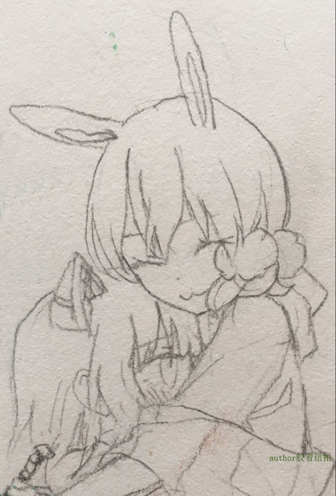

Lofter链接：http://shiorc.lofter.com/post/1f0e7808_1136ad47
标题中译：你就在那灯火阑珊之处
——【以下正文】——
月圓之日的夜晚，是家人團聚的日子。
本應如此。
鼓著臉在上面寫滿了「不開心」的康弗斯走在熱鬧的街上。她本以為這個夜晚家裡會熱熱鬧鬧的，大家團聚在一起賞月吃團子。
不，雖然不願承認，但這本來就不太可能。克拉克斯頓的眼裡只有戴森，戴森的眼裡只有克拉克斯頓。她們兩個才不會管什麼節日，可能沒有什麼日子是她們兩個不自己膩在一起而和家裡人一起團聚的。
康弗斯不在意這個。她在意的是，蓮ki大人也沒有和自己打招呼，就咻地一下從家裡消失了的事情。
本來午睡之前，她還看著蓮ki大人在辦公室裡忙著工作的事情的。為了不打擾蓮ki大人的工作，她拼命克制著自己想要向著蓮ki大人撒嬌的衝動，回到自己的房間裡去午睡去了。結果，一覺醒來，天色漸晚。康弗斯躡手躡腳地溜到蓮ki大人的房間裡偷偷往裡看，卻發現那個粉色的身影已經消失不見了。
就算不能和克拉克斯頓她們一起，至少也別丟下我啊！
她想這麽說，但現在這裡沒有人會聽她說話。節日的歡樂氛圍籠罩著整片商店街，甚至只是像康弗斯那樣鼓起臉豎起電子耳朵的生氣表情都已經和環境格格不入了。
紫髮小貓就那麼漫無目的地在街上轉著圈，和各種各樣的人們擦肩而過。
她的視線從身旁的路人們身上掃過，不管是成雙成對、拖家帶口，還是獨自一人的行人，臉上都洋溢著幸福的微笑，只有康弗斯臉上掛著不滿的表情。越是看著周圍擦肩而過的人們臉上幸福的笑容，康弗斯就越覺得不開心。
不過很快她就沒有一個人一個人看過去的餘裕了，因為出現在視野裡的一個身影吸引了她全部的注意力。
那是她最期待、卻也是最沒想到能在這裡偶遇上的人。一如既往的衣著和髮型，頭上抖動著的兔子耳朵和纏在腰間的藍白相間的圍巾，都是康弗斯熟悉得不能再熟悉的那個人身上才能看到的了。
蓮ki大人手裡捧著幾張相片，一邊全神貫注地看著一邊在道路上走著，甚至完全沒有注意到擦肩而過的小康弗斯。康弗斯想要回身提醒一下蓮ki大人走路的時候精神不集中在路況上會很危險，注意力卻被她手上的照片吸引。
蓮ki大人走得有些急，她手裡的相片康弗斯只是急匆匆地掃到了一眼。雖然看不太清楚，但相片上那個長髮飄逸、髮色也和蓮ki大人很像的人，康弗斯大約也有些印象。
康弗斯決定偷偷地跟上去。她想要看看在這個日子裡狠心拋下自己的母親大人，究竟有什麼事情是比自己還重要的。
絕對不是因為嫉妒喔。
康弗斯就這麽一路躲在樹後、牆角後，偷偷地跟著母親大人。母親大人專心地盯著照片應該不會發現她，而且就算被發現了也是拋下自己的母親大人的錯…她在心裡給自己找好了無數的藉口，但是真的做出這種事情她還是感到很心虛。只是現在好奇心佔了上風，她實在太想知道蓮ki大人要去做什麼。
她所追蹤的那個粉色身影一路低著頭向前走著，絲毫沒有注意到有個跟蹤者的樣子。稍微拐了幾個彎兒，蓮ki大人便鑽進了路旁的一家星◯克咖啡店。
小驅逐艦看著母親大人的身影消失在了咖啡店的門後，稍微猶豫了一下之後，她兩手握拳給自己做了一個加油的手勢，然後輕輕地推開了大門，探了一個頭進去。
所幸的是，已經落座的母親大人正坐在背對門的位置，於是康弗斯趕快趁著機會溜了進去，在離母親大人不遠，又隔著裝飾物擋著的座位坐了下來。
剛才偷瞄的時候看到母親大人對面的確也有誰坐在那裡，似乎就是之前照片中的那個淺色長髮的身影。
不過出乎康弗斯的意料的是，除了她們以外，還有一位粉色長髮的女孩子也坐在蓮ki大人的對面，看來蓮ki大人不是拋棄了自己出來和別人約會的。
康弗斯的心裡有那麼一瞬間放鬆了下來，但她的好奇心還在不安地騷動著，想要知道蓮ki大人出門的目的。那邊似乎傳來了說話的聲音，康弗斯動了動頭上的電子耳調整到一個最好的收聽方向。別的艦裝出門的時候嫌麻煩就沒帶，但這個看起來只是可愛髮飾的電子耳，即使有些引人注目，她也不願意摘下來。
更何況無論是蓮ki大人頭上的耳朵還是那個粉髮女孩子頭上戴著的大到誇張的兔耳裝飾，都比她的電子耳顯眼得多。特別是那個女孩子，就算座位之間的裝飾擋板擋住了人的身影，還是能看到從比擋板更高處伸出的兩隻黑色的兔耳樣式的飾品。
她們的談話像是已經開始了，現在似乎是那個不認識的粉色頭髮的女孩子在說話。
「…這麼說，我也可以叫您長官了吧！」
「稱呼的話，請隨意就好呢，D…呃…」
似乎是沒記住對方名字的樣子呢，母親大人。康弗斯已經開始在腦海裡想像得出母親大人臉微微發紅的有些窘迫的可愛樣子，和自己難得的說教的樣子，「哎呀，和別人談話時，不好好記住對方的名字可不行。」
…不、不對。現在還在偷聽中，無謂的妄想就等之後留在自己房間裡就好了。康弗斯輕輕拍拍自己的臉，把精神集中到接收到的聲音上。
「Diether von Roeder唷。不過初次見面真的很少有人能記住名字，直接稱呼我［Z 17］就可以了…」
前言撤回。
康弗斯為自己十幾秒前的妄想感到羞愧。正如所述，母親大人絕不會犯這種低級的錯誤。如果她記不住對方的名字，那一定是對方名字的問題，讓康弗斯自己來記憶也是絕對記不住的。
「…即使您是長官，也請不要亂碰！這可不是耳朵！」
隨著比剛才的聲音稍微大一些的說話聲的，是擋板擋不住的那對黑色兔耳型的飾品的微微晃動。
哼，居然對我以外的女孩子動手動腳。康弗斯默默地腹誹著，還順便連之前的罪過一起加了上去。而且明明是母親大人說的今天是家人聚在一起的節日，結果擅自丟掉自己跑出來，母親大人真是最差勁了！
「抱歉抱歉…因為對這個艦裝的設計有些在意，不自覺地就…」
「原來是這樣啊、嗯…也是呢，因為您是艦裝設計師嘛。不過，這個不是我的艦裝設計師先生的設計，而是我自己要求的喔！我覺得這樣的話，會比較可愛一點…」
「是自己的要求啊！原來如此，我做設計的時候都沒有問過她們的想法…下次回去問問我的小康弗斯吧，不知道她喜歡什麼樣的呢？…啊、長春妳瞪我！」
後半句沒有傳進康弗斯的耳朵裡。突然聽到母親大人用那麼親密的稱呼提起自己，康弗斯的小腦袋刷的一下變得一片空白，甚至連自己還在偷聽的事情都忘了，腦海裡只剩下「我的小康弗斯」這幾個單詞。
不過她偷聽的對象們並不會因為小偷聽者而中斷。
「不管是什麼理由，即使是設計師大人，也不準碰我的Diether！之前給您發送照片的時候也說過的，她是只屬於我的！」
「好的好的我知道的啦長春，妳今天叫我出來只是想帶著她見家長這種事情我明白的…」
「不…才不是見家長什麼的…」雖然立刻打斷了蓮ki大人的話，長春的聲音也小了一大截，倏地變得通紅的臉也在證實著她嘴裡試圖否定的內容。
Z17只是在旁邊一臉認真地看著蓮ki和長春的對話，等到她們差不多鬧完了，長春臉上的紅暈開始漸漸散去的時候，Z17向著蓮ki大人投下了一顆重磅炸彈。
「長官，我是真心喜歡著小長春的，希望妳能允許我們在一起！」
蓮ki大人驚愕地看向長春，她正低著頭用手捂著通紅的臉。看來又是這個小傢伙和Z17說了什麼吧。
「小、長、春？」
蓮ki大人一如既往親切地微笑。完全沒有在微笑後面藏著任何東西，身後也完全沒有散發出黑色的氣體。不過，長春似乎感到什麼莫名的威壓一樣。「咿！我、我會解釋清楚的…設計師大人請原諒我！」
真是的，要不是沒有正在喝飲料，恐怕剛才已經不小心噴出來…啊，這麼說自己還沒有點單。
「那我去買飲料，妳先好好和Z17解釋喔～」
蓮ki大人站起身來，同時還不忘給長春一個可愛的微笑。
「咿……！是、是！」
唉，小長春那孩子就是在關鍵的時候容易退縮，明明是認準了一個人就不肯放手的類型來著…蓮ki大人一邊在心裡想著，一邊離開座位往吧台的方向走去。
然後出現在她眼前的那隻紫色小貓讓她措手不及。
「康、康弗斯？」
正在偷聽那邊「那個，Diether，我之前和妳說在中國結婚必須要家長的同意，其實…」的康弗斯，聽到這個熟悉的聲音在喊自己的名字，腦子再一次刷地變得空白，長春「其實」後面的內容一個字也沒聽到了。
看見康弗斯一瞬呆住的樣子，蓮ki大人就能確定這隻的確是自己家的小貓——雖然那麼明顯的電子耳，本就絕對不會認錯。
「康弗斯？妳在這裡做什麼？」
蓮ki輕輕伸出手敲敲康弗斯的小腦袋，這才讓她回過神來。
「那個…這個…」稍微慌亂了一下之後，思考能力恢復過來的康弗斯還是決定實話實說。
「因為、醒來的時候母親大人就不見了，明明說好了今天是團聚的日子來著…！我以為自己被母親大人丟下了，就…」
蓮ki大人噗嗤一聲輕笑出來。
「好了好了…小笨蛋。我怎麼會丟下妳呢。」
她拉起小康弗斯回到自己的座位上，那邊長春還在和Z17滿臉通紅地解釋著。蓮ki大人從座位底下拎出一個包裝精美的月餅袋子，在康弗斯面前晃晃。
「我出門可不只是為了她們要見家長呀。還記得有隻小饞嘴貓從中秋節之前就一直自言自語著想吃月餅，我就為了她出來買了呀～」
康弗斯想起自己之前確實一直在自言自語著好想試一下月餅的味道之類的話，頓時啞口無言。對著蓮ki大人手裡的月餅袋子愣了一小會兒之後，康弗斯撲到了蓮ki大人的懷裡摟著她，眼角開始泛起晶瑩的光。
「對、對不起…我錯怪蓮ki大人了…嗚嗚嗚…」
「好了好了，沒關係的。妳看，我們這不是團聚了嘛。」蓮ki大人看了看對面一臉正經的Z17和滿臉通紅手忙腳亂地解釋著的小長春，伸手理了理康弗斯柔順的紫髮，臉上掛起了寵溺的微笑。
————
